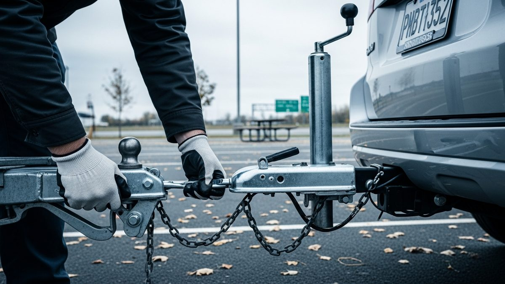

Assess your vehicle's specific towing requirements
Vehicle-specific assessment begins with consulting the manufacturer's owner manual for drivetrain restrictions, transmission protocols, and weight limitations. Ignoring these guidelines risks drivetrain damage or voided warranties during light duty towing passenger vehicles operations. Documentation may also reside in glove compartments or manufacturer portals.
Drivetrain configuration fundamentally determines permissible methods. Front-wheel drive vehicles often tolerate short-distance wheel-lift towing with driven wheels elevated and transmission in neutral, though manufacturer variance exists. All-wheel drive and four-wheel drive systems typically mandate flatbed transport to prevent transfer case or differential damage from rotating axles. Automatic transmissions frequently prohibit any ground-contact towing; manual transmissions may permit limited distances under strict conditions. Gross vehicle weight rating (GVWR) must remain below the tow truck's certified capacity for light-duty classification. Dispatch centers require this data to allocate appropriately equipped units. Equipment must comply with industry standards detailed in the comprehensive equipment specifications guide. Verification prior to roadside assistance arrival prevents mismatches. Reference the vehicle identification number (VIN) when communicating requirements. Ground clearance, tire condition, and aftermarket modifications further influence viability. Vehicles with modified suspensions or undercarriage damage generally default to flatbed transport regardless of drivetrain. Environmental factors like steep grades or precipitation necessitate additional risk evaluation. Systematic assessment prevents compounding existing issues during recovery.
Select the appropriate light-duty towing method
Method selection balances vehicle architecture, transport distance, terrain, equipment availability, and manufacturer constraints. Flatbed towing provides maximum drivetrain protection and stability but requires greater operational space. Wheel-lift systems offer efficiency for compatible front-wheel drive vehicles over short distances when guidelines permit.
Light-duty towing primarily utilizes two configurations. Wheel-lift apparatuses elevate one axle while opposite wheels maintain road contact, proving effective for traffic clearance but introducing drivetrain strain risks if misapplied. Flatbed systems hydraulically lower ramps for drive-on or winch-assisted loading, eliminating transmission wear and providing superior stability on uneven surfaces. Integrated dolly variants exist but are less common in modern fleets. Trailer Test Verdict maintains that flatbed towing represents the industry-preferred solution for all-wheel-drive passenger vehicles, electric vehicles with regenerative braking systems, and models with compromised ground clearance. Dispatch protocols prioritize flatbed assignment for these categories when geographically feasible. Tow truck operators conduct final method verification upon arrival, weighing real-time factors like traffic density and access constraints. Economic considerations occasionally influence selection, though safety and vehicle integrity remain paramount. Reference detailed methodology comparisons in the wheel-lift operational analysis and flatbed deployment evaluation resources. These documents outline equipment specifications, limitations, and scenario-based recommendations derived from field testing.
Implement essential safety protocols before transport
Safety protocols initiate with hazard mitigation: activate vehicle hazard lights, deploy reflective triangles at regulatory distances (typically 100–300 feet rearward), and ensure all occupants remain clear of traffic lanes. The tow truck operator conducts a joint safety briefing with the vehicle owner prior to equipment deployment.
Pre-transport verification involves multiple checkpoints. Tire pressure and condition assessments prevent failures during loading. Brake functionality checks ensure vehicle stability during winching. Flatbed operations require ramp angle verification to avoid undercarriage contact. Wheel-lift applications demand suspension integrity confirmation for the elevated axle. Safety chains and straps must show no fraying or deformation; industry standards mandate replacement after visible damage. The Federal Motor Carrier Safety Administration specifies securement requirements in 49 CFR §393.7. Operators document pre-existing damage via timestamped photographs. Clear hand signals between driver and ground personnel are established, especially in low visibility. Weather adaptations include reduced speeds in high winds or enhanced lighting during precipitation. Loose interior items are secured to prevent projectile hazards. Aftermarket accessories like roof racks may require temporary removal. Certifications from bodies like the Towing and Recovery Association of America emphasize these protocols as non-negotiable. Safety protocol adherence directly correlates with incident reduction in roadside assistance engagements.
Prepare your passenger vehicle for secure towing
Preparation involves positioning the transmission per manufacturer specifications, disengaging parking brakes only when explicitly permitted, and securing loose interior components. Never attempt preparation within active traffic lanes; await operator instructions after moving to a safe location.
Transmission protocols vary significantly. Front-wheel drive automatics typically remain in Park with parking brake engaged until operator assumption of control; some permit Neutral for brief wheel-lift towing after verification. All-wheel drive systems universally require flatbed transport with transmission in Park. Manual transmissions generally allow Neutral with parking brake released during flatbed loading, but wheel-lift applications may demand specific axle elevation sequences. Steering wheels are immobilized via seatbelt routing to prevent unexpected movement. Exterior preparation includes closing windows, sunroofs, and convertible tops. For collision-involved vehicles, operators assess structural integrity before applying lifting forces. The roadside assistance provider assumes technical preparation responsibility upon arrival, though owner awareness facilitates collaboration. Pre-arrival condition photography provides objective damage reference. Post-preparation verification by the tow truck operator ensures configuration safety before movement. Hybrid and electric vehicles require specialized protocols; high-voltage system procedures often mandate flatbed exclusivity. Operators trained in alternative fuel handling follow distinct safety checklists. Preparation errors remain a leading cause of secondary damage during light-duty towing operations.
Understand the complete towing service workflow
The workflow initiates with service request dispatch and concludes upon verified vehicle delivery. Key phases include resource allocation, on-scene assessment, secure loading, controlled transport, and documentation handoff. Transparent communication between parties reduces uncertainty throughout the process.
Dispatch centers receive requests via mobile apps, hotlines, or automated crash systems. Geographic information systems identify the nearest available tow truck meeting equipment specifications. Estimated arrival times incorporate traffic, operator status, and route complexity. Upon arrival, the operator verifies owner identity, reviews pre-existing damage, and confirms destination. Loading follows the predetermined method with continuous safety monitoring. During transport, operators maintain dispatch communication regarding progress. Destination options include repair facilities, residences, or authorized storage yards. The approved storage facility network maintains specific receiving protocols for towed vehicles.

Upon arrival, operators facilitate unloading and provide condition reports and service invoices. Digital platforms increasingly streamline workflows via real-time GPS tracking and electronic signatures. Roadside assistance providers document each phase for quality metrics and insurance support. For law enforcement-involved incidents, additional coordination occurs regarding evidence preservation and chain-of-custody. The roadside assistance sector continues evolving through technology integration while prioritizing safety. Understanding this structured workflow sets accurate expectations for timelines and procedural steps. Dispatch efficiency directly impacts roadside safety exposure duration.
Verify service provider credentials and compliance
Credential verification ensures current business licensing, adequate insurance coverage (including garage keeper's liability), and regulatory compliance. Request documentation prior to authorizing service; reputable providers supply this readily via digital channels.
Licensing requirements vary by jurisdiction but commonly include state towing permits and municipal business licenses. Insurance certificates should explicitly cover vehicle custody periods. Operator certifications from recognized bodies like the Towing and Recovery Association of America indicate standardized safety and equipment training. The Federal Motor Carrier Safety Administration maintains the SAFER System database for verifying interstate carrier credentials and safety ratings. For accident towing, confirm adherence to local law enforcement rotation lists or preferred vendor programs. Consumer protection agencies often maintain complaint histories; consulting these provides additional due diligence. Unlicensed operators pose significant financial and safety risks, including inadequate damage coverage. Post-service documentation should include itemized invoices matching quotes, signed condition reports, and clear custody transfer records. Discrepancies warrant immediate clarification. Verification represents a critical due diligence step, particularly for high-value vehicles requiring specialized handling. Adherence to jurisdictional accident towing regulations is mandatory for incident-related recoveries.
Follow post-tow procedures for vehicle safety
Post-tow procedures begin with a comprehensive visual inspection under adequate lighting before operating the vehicle. Check for new scratches, dents, fluid leaks, tire sidewall damage, or alignment issues potentially introduced during transport. Test all systems—brakes, steering, transmission—in a controlled environment before returning to traffic.
Document discrepancies immediately with timestamped photographs and written notes. Compare findings against the operator's pre-tow condition report. Verify parking brake functionality and transmission engagement after unloading, especially following wheel-lift methods. Fluid level checks identify potential leaks developed during transit. Unusual puddles beneath the vehicle warrant professional assessment. Test drives should commence at low speeds on straight, level surfaces to evaluate handling. Unusual noises, vibrations, or warning lights necessitate diagnostic evaluation before extended operation. Notify the towing provider and insurer promptly if damage is suspected while evidence remains fresh. Retain all documentation—invoices, condition reports, communications—for potential claims. Consult the vehicle manufacturer regarding maintenance schedule adjustments post-towing. Long-term monitoring remains advisable; some transport-related stresses manifest gradually through abnormal wear patterns. Documenting the towing event in service history provides valuable context for future diagnostics. These methodical checks safeguard against latent issues compromising future vehicle safety or operation.